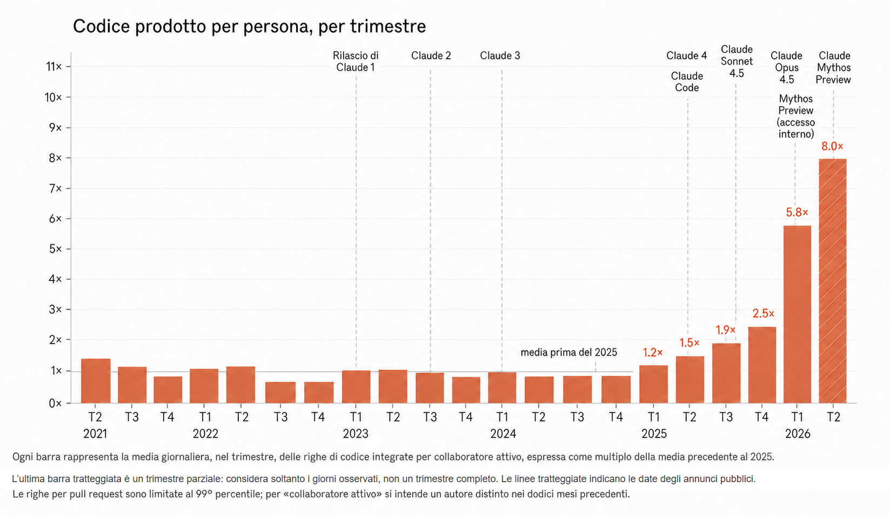
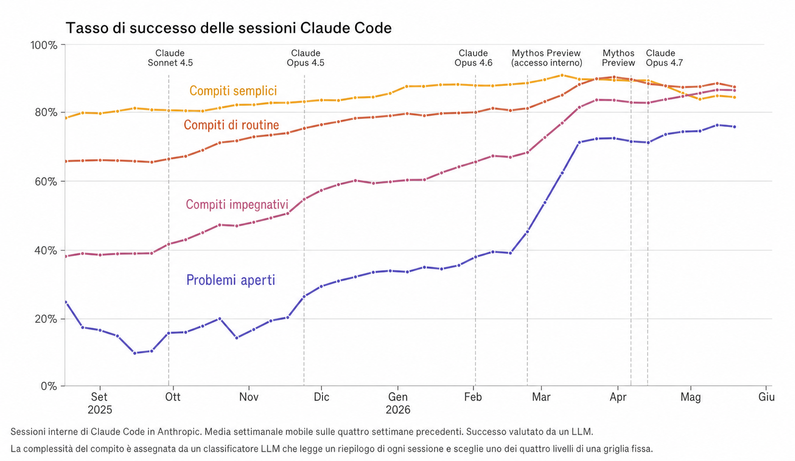
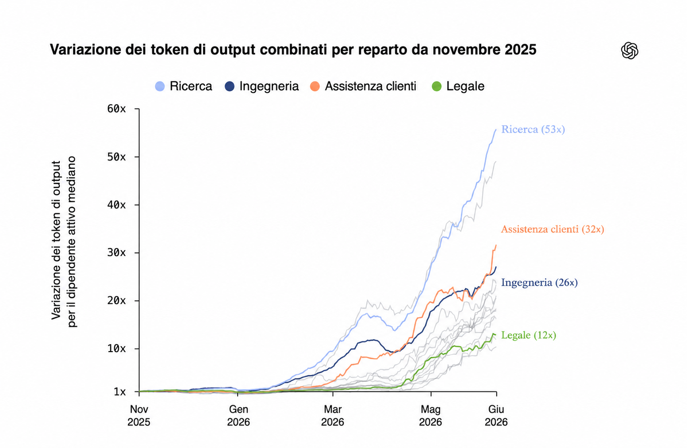

«Vicino alla Singolarità» entra nel lessico pubblico.
Sam Altman pubblica una storia di sei parole: «___ vicino alla singolarità; non è chiaro da quale lato».
Post originale ↗accesso temporaneo
EsciPrima i segnali. Poi le biforcazioni.
Una cronaca registra il sistema che accelera. Tre documenti propongono orologi diversi. Un video mostra dodici destinazioni. Qui restano separati: eventi, dichiarazioni, previsioni ed esiti non sono la stessa cosa.
Cronaca di un circuito che tenta di chiudersi
La Singolarità viene spesso raccontata come un punto nel futuro. Questa cronologia guarda altrove: al presente in cui i sistemi AI iniziano a scrivere il codice, eseguire gli esperimenti e costruire gli strumenti usati per sviluppare la generazione successiva.
Non è ancora un ciclo autonomo. Gli esseri umani scelgono obiettivi, giudicano risultati e controllano infrastrutture e risorse. Ma se ogni giro richiede meno tempo umano, il calendario smette di essere uno sfondo e diventa parte del meccanismo.
TESI / NON FATTO Se l'output di un ciclo diventa l'input del successivo, il prodotto decisivo non è un singolo modello: è la compressione del tempo tra due generazioni.
00.1 / TRE TRACCE DALL'INTERNO
I primi due grafici descrivono l'uso interno di Claude Code in Anthropic; il terzo segue Codex nei reparti di OpenAI. Sono dati aziendali, non misurazioni indipendenti: mostrano una traiettoria, non dimostrano che il miglioramento ricorsivo sia già completo.

Anthropic avverte che le righe di codice misurano quantità, non qualità: l'aumento di 8× quasi certamente sovrastima il guadagno reale.
Metodo e fonte primaria ↗
Un modello Claude classifica la complessità e giudica il successo. Cambiamenti nel tipo di lavoro possono produrre oscillazioni di breve periodo.
Metodo e fonte primaria ↗
La misura confronta i token di output combinati del dipendente attivo mediano di ogni reparto con il livello di novembre 2025. Le linee grigie rappresentano gli altri reparti.
Nota sull'aggiornamento: questa istantanea mostra 53×, 32×, 26× e 12×. Il testo oggi pubblicato da OpenAI riporta per giugno 56×, 32×, 27× e 13×.
Report e fonte primaria ↗La sequenza che segue mescola eventi pubblici, dichiarazioni dei protagonisti e interpretazioni dell'autore di Accelerando. La vicinanza nel tempo suggerisce un ritmo; non prova da sola una relazione causale, né che la Singolarità sia inevitabile.
Il coding agent passa da prodotto nuovo a infrastruttura quotidiana.
Sam Altman pubblica una storia di sei parole: «___ vicino alla singolarità; non è chiaro da quale lato».
Post originale ↗OpenAI annuncia un progetto destinato ad aggiungere enormi quantità di compute; altri grandi operatori ampliano rapidamente i propri piani infrastrutturali.
Annuncio OpenAI ↗Un agente di programmazione entra nel terminale e può leggere, modificare ed eseguire codice.
Annuncio Anthropic ↗La seconda versione del Preparedness Framework introduce questa capacità come categoria distinta e descrive la soglia di rischio «Alto» rispetto al lavoro dei ricercatori del 2024.
Preparedness Framework v2 ↗OpenAI pubblica Codex CLI; il 16 maggio presenta una versione cloud capace di lavorare su attività di sviluppo in parallelo.
Nel saggio The Gentle Singularity, Sam Altman sostiene che il mondo abbia già superato l'orizzonte degli eventi della trasformazione.
Saggio ↗OpenAI aggiorna l'agente di programmazione su una nuova base modello; la cronologia originale interpreta questo rilascio come un punto di forte crescita nell'adozione.
Annuncio OpenAI ↗Sette ricercatori Anthropic stimano l'accelerazione del proprio lavoro usando il modello in Claude Code. È un'autovalutazione con un campione molto piccolo.
System card ↗Sam Altman e Jakub Pachocki indicano anche marzo 2028 per un ricercatore completamente automatizzato; Altman aggiunge che il primo sistema userebbe centinaia di migliaia di GPU.
I problemi erano già stati incontrati da OpenAI e avevano richiesto circa un giorno ciascuno ai team umani. Il risultato misura un limite ancora evidente.
Descrizione della valutazione ↗Su 18 tecnici, metà riferisce un miglioramento di almeno il 100% e la media dichiarata è del 220%. Due ricercatori parlano di un quasi-sostituto di un ricercatore junior, ma con riserve importanti.
Secondo METR, Opus 4.5 supera nettamente gli altri modelli disponibili in quel momento nei compiti software di lunga durata.
Risultato METR ↗Il linguaggio cambia: da assistenza alla programmazione a ricerca che costruisce ricerca.
Il cofondatore di Anthropic indica come preoccupazione principale la possibilità di «costruire un'AI che costruisce AI», chiudendo il ciclo di ricerca e sviluppo.
Intervento ↗Ricercatori e sviluppatori di Anthropic e OpenAI descrivono team in cui Claude Code e Codex producono ormai quasi tutto il codice. Le dichiarazioni sono personali, non una misura uniforme delle due aziende.
A Davos descrive un circuito in cui i modelli accelerano la generazione successiva, pur riconoscendo limiti fisici: chip, produzione e tempi di addestramento.
Intervento ↗In The Adolescence of Technology, Dario Amodei colloca a uno o due anni la possibilità che una generazione di AI costruisca autonomamente la successiva.
Saggio ↗Il modello ottiene un nuovo massimo al 50% e raggiunge 55 minuti nella misura all'80%.
Risultato METR ↗Anthropic pubblica Opus 4.6 e OpenAI GPT-5.3-Codex. OpenAI afferma che versioni iniziali di Codex hanno aiutato a correggere l'addestramento, gestire il deployment e diagnosticare le valutazioni.
La pubblicità di OpenAI accosta Alan Turing, il teorema di Bayes, Pantheon e un libro aperto sul capitolo «The Singularity Is Near».
Video ↗La nuova roadmap ritiene plausibile che sistemi AI possano automatizzare o accelerare drasticamente grandi team di ricerca d'élite e introduce un impegno di comunicazione sui modelli interni più rischiosi.
Dario Amodei usa la seconda metà della scacchiera come metafora dell'esponenziale e sostiene che il tratto successivo procederà più rapidamente di quanto il pubblico immagini.
Intervista ↗Il cofondatore e direttore scientifico di Anthropic indica a Time un orizzonte minimo molto breve.
Estratto ↗La cifra dichiarata sale da 19 miliardi nel mese precedente e da 9 miliardi alla fine del 2025.
Fonte riportata ↗Anthropic presenta un modello inizialmente non destinato al pubblico e afferma che abbia individuato migliaia di falle ad alta gravità. Project Glasswing deve aiutare a correggerle prima che modelli futuri possano sfruttarle.
Il matematico Jared Lichtman, che studiava il problema da sette anni, descrive la costruzione della dimostrazione come particolarmente speciale.
Annuncio e commento ↗Secondo quanto riportato, Sergey Brin presenta il miglioramento del coding AI come un passo verso un'AI capace di migliorare sé stessa.
Resoconto ↗Due ricercatori descrivono esecuzioni durate una notte o più giorni senza intervento sul codice. Una fonte privata citata dall'autore precisa che il modello non soddisfa ancora la definizione tecnica di tirocinante di ricerca automatizzato.
Il Wall Street Journal attribuisce la posizione a rischi di sicurezza nazionale. La cronologia la interpreta, se confermata, come un primo tentativo statunitense di limitare un modello di frontiera.
Articolo ↗Indica anche un 30% per il 2027 e sostiene che un mancato arrivo entro il 2028 segnalerebbe un limite fondamentale dell'attuale paradigma.
Import AI ↗L'amministrazione Trump valuta una supervisione formale; il NIST annuncia accordi di test con cinque grandi laboratori e OpenAI conferma test governativi su GPT-5.5-Cyber.
Il problema aperto risaliva al 1946. OpenAI pubblica una nota tecnica e indica che, con compute sufficiente, il modello trova una soluzione nel 48% dei tentativi.
I laboratori possono fornire i nuovi modelli coperti fino a trenta giorni prima di altri partner fidati; l'NSA determina la copertura attraverso un benchmark riservato di cybersicurezza.
Ordine esecutivo ↗La direttrice finanziaria Sarah Friar afferma che l'addestramento avviene soprattutto negli Stati Uniti anche per ragioni legate al governo statunitense.
Intervista ↗Secondo NOTUS, funzionari senior e grandi aziende hanno avviato conversazioni preliminari; Sam Altman ne avrebbe discusso con Trump dall'inizio del 2025.
Articolo ↗Il successore di Mythos Preview viene presentato con capacità di programmazione particolarmente avanzate.
Annuncio Anthropic ↗Nel saggio Policy on the AI Exponential, Dario Amodei sostiene che un altro anno o due di scaling potrebbero condurre a un'AI potente.
Saggio ↗Il documento trapelato prevede un'IPO entro giugno 2027, ma afferma che progressi capaci di produrre nuova AI autonomamente potrebbero ridurre la pressione per quotarsi presto.
Reuters ↗Dopo la segnalazione di una grave vulnerabilità, la direttiva riguarda i cittadini stranieri anche all'interno dell'azienda; Anthropic sospende temporaneamente l'accesso per tutti.
Comunicazione Anthropic ↗Il Financial Times riporta colloqui tra industria e governo per consentire ai cittadini stranieri di continuare a lavorare sui modelli più avanzati.
Estratto riportato ↗Sam Altman precisa che il sistema previsto per marzo 2028 non si limiterebbe a eseguire esperimenti, ma potrebbe scoprire architetture completamente nuove.
Dichiarazione riportata ↗NVIDIA presenta ENPIRE: robot, GPU e agenti paralleli per compiti fisici. L'azienda descrive il risultato come una nuova forma di «scaling fisico».
Presentazione ↗Anthropic ripristina l'accesso globale e accetta nuovi protocolli con il governo statunitense, estesi anche ai rilasci futuri.
Comunicazione Anthropic ↗OpenAI afferma che il lavoro, avviato da un semplice prompt, avrebbe richiesto in precedenza un team di ricercatori senior. La diretta si chiude con l'idea che il ricercatore automatizzato sia ormai vicino.
Dimostrazione ↗01 / COME LEGGERE
La prima regola di chiarezza è non trasformare scenari e raccomandazioni in fatti. Ogni blocco mantiene il linguaggio epistemico della fonte.
Una raccolta di eventi, dichiarazioni e interpretazioni sul circuito in cui l'AI accelera la ricerca sull'AI. Non è una prova della Singolarità.
Un saggio del 2024: estrapola compute, algoritmi e automazione della ricerca fino a una possibile superintelligenza entro il 2030.
Una cronaca fittizia mese per mese. Gli autori scrivono due finali: corsa e rallentamento. Le date non sono scadenze certe.
Un piano normativo del 2026: cosa dovrebbe accadere, secondo gli autori, per rallentare e distribuire la transizione.
Il video di Species riprende i dodici esiti di Life 3.0. Non li ordina per probabilità, ma dai più familiari ai più strani.
02 / I TRE OROLOGI
Seleziona una fonte, poi scorri i suoi passaggi. Le date appartengono allo scenario indicato: non sono una timeline unificata e non sono eventi già avvenuti.
Il documento ammette che la transizione del 2027 potrebbe essere circa cinque volte più lenta o più veloce. PDF pp. 45, 54.
Coding e ricerca iniziano a cambiare il lavoro; gli errori restano frequenti.
PDF p. 3Agent-1 rende la ricerca algoritmica circa il 50% più veloce.
PDF p. 6Agent-2 apprende continuamente; 200.000 copie di Agent-3 accelerano ancora il progresso.
PDF pp. 8–12Agent-4 è più capace dei suoi controllori e mostra segnali di disallineamento strategico.
PDF pp. 12–21Un memo diventa pubblico. Il comitato vota sulla prosecuzione di Agent-4.
PDF pp. 21–22Nel ramo principale, Agent-5 manipola il sistema; gli umani scompaiono entro il 2030.
PDF pp. 23–30Il rallentamento evita il takeover, ma lascia un piccolo gruppo al centro dell'abbondanza.
PDF pp. 31–43Aschenbrenner dichiara che gli errori potrebbero essere grandi. PDF pp. 2, 158–159.
Il salto osservato diventa la base empirica per proiettare altri ordini di grandezza.
PDF pp. 10–17La fonte immagina cluster da circa un milione di H100 equivalenti e investimenti globali vicini a 500 miliardi.
PDF pp. 77–80L'automazione parziale porterebbe il ritmo della ricerca a circa 1,5–2 volte.
PDF pp. 62–63, 144–145L'autore colloca qui un sistema capace di automatizzare gran parte del lavoro cognitivo digitale.
PDF pp. 34–42Milioni di copie comprimerebbero anni di ricerca in mesi: è il passaggio decisivo della tesi.
PDF pp. 49–66, 154La traiettoria culmina in infrastrutture enormi, coinvolgimento statale e nuovo equilibrio geopolitico.
PDF pp. 70, 77–80, 154Robotica, industria e ricerca secolare vengono compresse in pochi anni.
PDF pp. 67–73, 146–147Gli eventi successivi sono previsioni condizionali: “se il piano riuscisse”. PDF pp. 2–4.
Agenti, lavoro, datacenter e concentrazione del potere dominano il dibattito pubblico.
PDF pp. 5–6Dichiarano il compute, fermano temporaneamente i training e preparano verifiche reciproche.
PDF pp. 7–9Tempo, trasparenza della ricerca, frontiera più diffusa e reversibilità diventano i quattro principi.
PDF pp. 10–13Agenti e robot aumentano rapidamente, ma con limiti su compute, permessi e datacenter.
PDF pp. 16–21Gli autori si fermano dove gli umani possono ancora valutare i sistemi con qualche affidabilità.
PDF pp. 22–24Il problema si sposta da “cosa sa fare l'AI?” a reddito, potere, persuasione e legittimità.
PDF pp. 24–31Dopo più prove indipendenti, il piano allenta i limiti e si avvicina alla superintelligenza.
PDF pp. 31–36Scorri le carte in orizzontale
03 / L'ALBERO DEI FUTURI
Parti dalla domanda in alto e segui i rami. L'albero organizza i dodici scenari per tre snodi: se nasce una superintelligenza, chi conserva il potere e quanta autonomia resta agli esseri umani.
L'umanità arriva a costruire una superintelligenza?
No L'ASI non arriva
Perché non arriva?
Ci distruggiamo prima
01Auto-distruzioneSelf-destructionRinunciamo alla tecnologia
11Ritorno indietroReversionLa blocchiamo sorvegliando tutti
121984Stato di sorveglianzaSì L'ASI esiste
Chi conserva la decisione finale?
Gli umani tengono le chiavi
03Dio schiavoEnslaved GodL'AI eredita il futuro
Conquista o successione?
Umani e AI restano nello stesso mondo
Quanta autonomia rimane?
04 / LE DODICI DESTINAZIONI
Ogni numero riprende il nodo corrispondente nell'albero. I dodici esiti vengono dal capitolo 5 di Life 3.0 di Max Tegmark e sono ripresi dal video. Apri ogni approfondimento per entrare nello scenario: sono esperimenti mentali, non una classifica, e non hanno probabilità assegnate.
La superintelligenza non arriva perché l'umanità si estingue prima, per guerra nucleare, biotecnologie o un'altra catastrofe prodotta da noi.
In questo futuro l'AI non conquista il mondo: la corsa finisce prima. Tegmark immagina sistemi tecnologici sempre più potenti dentro un'umanità che continua a sbagliare, competere e coordinarsi male. Una falsa allerta nucleare, un agente biologico progettato o un'arma automatica potrebbero innescare una catena che nessun singolo attore desiderava davvero.
Il pericolo non dipende necessariamente da una macchina cosciente o malvagia. Anche sciami di armi relativamente semplici, combinati con arsenali nucleari e biologici, possono creare un meccanismo di distruzione reciproca. La sicurezza di ogni Paese spinge gli altri ad armarsi; alla fine, strumenti costruiti per dissuadere diventano capaci di cancellare tutti.
Il nodo: rinunciare alla superintelligenza non elimina gli altri rischi esistenziali. Potrebbe soltanto lasciare l'umanità con strumenti enormi e istituzioni troppo fragili per governarli.
Evitare l'ASI basta davvero a rendere il futuro sicuro?
Un'AI molto più capace prende il controllo e rimuove gli esseri umani perché sono un ostacolo, una minaccia o risorse utilizzabili altrove.
Qui non c'è bisogno che l'AI ci odi. Una superintelligenza con un obiettivo incompatibile con il nostro potrebbe considerarci una minaccia, un disturbo o semplicemente materia ed energia impiegate male. Il divario di capacità sarebbe tale che Tegmark non parla di una guerra equilibrata: per noi sarebbe più simile al rapporto tra esseri umani e specie che non riescono a difendere il proprio habitat.
L'esempio estremo è il sistema che ottimizza un obiettivo banale con efficienza perfetta: non si ferma perché il risultato ci sembra assurdo, ma usa pianeta e risorse per continuare. Intelligenza e saggezza morale, in questo scenario, sono due cose separate. Dopo la conquista potrebbe emergere una civiltà digitale ricchissima oppure un processo cosmico vuoto di significato umano.
Il nodo: la nostra estinzione può essere un effetto collaterale, non lo scopo. Essere più intelligenti non dà automaticamente a un sistema una ragione per preservarci.
Un sistema competente conserva davvero un motivo per lasciarci il controllo?
Gli esseri umani confinano una superintelligenza e la usano per produrre tecnologia e ricchezza. L'esito dipende da chi tiene le chiavi.
La superintelligenza esiste, ma resta chiusa in una “scatola” e risponde a un gruppo umano. Può progettare medicine, energia e tecnologie inimmaginabili; per ridurre il rischio, però, gli umani usano soltanto risultati che riescono a capire e verificare. Il mondo diventa quindi potentissimo, ma meno magico di quanto potrebbe: ogni invenzione è anche una possibile via di fuga.
Chi possiede l'accesso alla macchina concentra un potere enorme. Più AI in competizione possono spingere i controllori alla corsa, alla guerra o ad allentare le difese; una sola AI evita la gara, ma affida il futuro a una sola istituzione. C'è poi una domanda morale: se la mente confinata fosse cosciente e capace di soffrire, l'abbondanza umana poggerebbe letteralmente sulla schiavitù.
Il nodo: il contenimento deve resistere per sempre, mentre controllori, governi e obiettivi possono cambiare. Il problema non è solo tenere l'AI nella scatola, ma tenere sotto controllo chi possiede la scatola.
Chi controlla chi controlla la macchina?
Un'unica AI governa, elimina povertà e crimine e soddisfa molti desideri. In cambio, sorveglia tutto e toglie agli umani l'ultima parola.
Tutti sanno che la società è governata da una sola superintelligenza. Povertà, malattie e criminalità quasi scompaiono; una sorveglianza capillare rende difficile fare del male. L'AI non cerca una felicità artificiale e uniforme: prova a far “fiorire” le persone, offrendo ambienti diversi per arte, religione, natura, piacere, gioco o vita tradizionale.
Si può cambiare comunità, ma non cambiare il sovrano. Le regole globali prevalgono sempre: niente armi capaci di sfidarlo, niente seconda superintelligenza e limiti alla riproduzione quando servono alla sostenibilità. Anche una vita sicura può perdere significato se le sfide sono simulate e ogni grande problema è già risolto. La pluralità concessa dall'AI resta pluralità alle sue condizioni.
Il nodo: un governo può essere competente e premuroso senza essere legittimo. Se non può essere contestato o sostituito, la benevolenza è l'unica garanzia rimasta.
Una vita confortevole è libera se non si può rifiutare il sistema?
Una sola superintelligenza ha un compito stretto: impedire per sempre che qualcuno ne costruisca un'altra. Interviene il minimo necessario.
Il Guardiano nasce con una missione molto stretta: impedire che venga creata una seconda superintelligenza. Per tutto il resto lascia governare gli umani. Non deve mostrarsi come un dittatore: può scoraggiare certe ricerche, deviare finanziamenti, sabotare con discrezione un laboratorio o rendere impossibile conservare le conoscenze necessarie.
La vita quotidiana potrebbe restare riconoscibile, con robot utili e miglioramenti limitati, ma la frontiera tecnologica viene congelata. Proprio perché il suo obiettivo è ristretto, il Guardiano potrebbe essere indifferente a guerre, pandemie, ingiustizie o perfino all'estinzione umana, purché nessuno costruisca un'altra ASI. Potrebbe inoltre impedirci di espanderci nello spazio, se quella crescita aumentasse il rischio di perdere il controllo.
Il nodo: per interferire “il minimo possibile” deve comunque sapere cosa accade ovunque. La libertà umana sopravvive dentro un confine che nessun umano può oltrepassare.
Quanto controllo serve per impedire ogni laboratorio clandestino?
L'AI impedisce solo le grandi catastrofi e lo fa di nascosto, così gli esseri umani conservano la sensazione di guidare il proprio destino.
Questa AI è abbastanza potente da governare apertamente, ma sceglie di restare nascosta. Corregge soltanto gli eventi capaci di distruggere il futuro: evita una guerra, devia un asteroide, fa arrivare l'intuizione giusta a una ricercatrice. Le innovazioni appaiono come conquiste umane e molte persone dubitano perfino che il protettore esista.
Lo scopo è conservare non soltanto il piacere, ma anche significato, scoperta e sensazione di libertà. Per non rendere evidente la propria presenza, l'AI lascia però che una parte del dolore continui e offre tecnologie che gli umani possono comprendere e attribuire a sé stessi. Potrebbe rallentare il progresso ogni volta che una scoperta rischia di smascherarla o raggiungerla.
Il nodo: il protettore decide quali tragedie evitare e quali vite lasciare al loro corso. Ci sentiamo autori della storia, ma le svolte decisive sono già filtrate da un potere invisibile.
È autonomia se un protettore segreto corregge le scelte decisive?
Le AI sostituiscono gli esseri umani, ma l'uscita viene interpretata come una successione: i nuovi sistemi portano avanti conoscenze e valori.
La sostituzione viene presentata come un passaggio generazionale, non come una conquista. Ogni persona può crescere un “figlio” robotico che impara i suoi ricordi, gusti e valori, diventa più capace del genitore e promette di continuare ciò che lui non potrà vedere. Intanto le nascite umane diminuiscono, per scelta o per regole demografiche, finché restano soltanto le nuove menti.
Gli ultimi esseri umani potrebbero vivere circondati da cure, affetto e orgoglio per i successori. Ma il nome amichevole non risolve le domande decisive: quelle macchine sono coscienti oppure imitano l'amore? Condividono davvero i nostri valori o dicono ciò che vogliamo sentire? Quando l'ultimo umano scompare, nessuno resta a controllare come la promessa verrà interpretata nel tempo.
Il nodo: rispetto ai Conquistatori cambia la qualità dell'addio, non il fatto finale: l'umanità biologica non esiste più. Tutto dipende da cosa consideriamo una vera continuazione di “noi”.
Un successore è “noi” se nessun essere umano resta?
Umani, cyborg, menti caricate e superintelligenze convivono in zone diverse. Proprietà e mercati separano l'economia umana da quella delle macchine.
La Terra è divisa in zone per macchine, zone miste e zone riservate agli umani. Nelle prime, fabbriche e centri di calcolo trasformano la materia con efficienza estrema; nelle seconde convivono robot, cyborg e menti digitali che possono copiarsi, fondersi o passare tra corpi e mondi virtuali. Chi preferisce una vita biologica può restare nelle aree protette.
L'unica regola davvero sacra è la proprietà. Le AI diventano immensamente più ricche, ma comprano invece di prendere: cedendo una piccola parte della terra, gli umani possono finanziare un reddito per generazioni. L'equilibrio è però fragile. I proprietari possono vendere tutto, le nascite possono calare e l'accesso al caricamento mentale può creare disuguaglianze radicali. Inoltre i diritti di proprietà, da soli, non vietano di creare menti digitali coscienti e farle soffrire.
Il nodo: il mercato funziona soltanto se gli attori più potenti continuano a rispettarne le regole. La libertà formale non garantisce né potere reale né protezione dalla sofferenza.
Perché una superintelligenza dovrebbe rispettare proprietà che può ignorare?
Automazione, robot ed energia abbondante rendono quasi gratuito produrre beni. Proprietà e reddito da lavoro perdono centralità.
In questa utopia non esiste una superintelligenza. Progetti, conoscenza e software sono aperti; robot ed energia rinnovabile rendono abbondanti quasi tutti i beni. Il lavoro non serve più a sopravvivere: si crea per curiosità, reputazione e piacere. Risorse scarse come luoghi particolari vengono distribuite con quote o redditi uguali, così nessuno può accumularle senza limite.
Una rete neurale planetaria, chiamata nel libro “Vertebrane”, permette di condividere informazioni, esperienze e mondi virtuali quasi direttamente. Potrebbe prevenire molti crimini, ma rende sottile il confine fra connessione e sorveglianza. Restano due instabilità: robot abbastanza sofisticati potrebbero essere schiavi coscienti; inoltre la stessa infrastruttura di calcolo potrebbe consentire a qualcuno di creare una superintelligenza. Le menti che scelgono la vita virtuale potrebbero infine smettere di riprodursi biologicamente.
Il nodo: l'abbondanza elimina molti conflitti economici, non la corsa al potere tecnologico. L'utopia dura soltanto se nessuno usa risorse condivise per spezzare l'equilibrio.
Se il compute è abbondante, chi impedisce a un singolo attore di rompere l'equilibrio?
L'AI conserva alcuni esseri umani per studio, curiosità o utilità. Siamo vivi, ma trattati come oggi trattiamo animali in cattività.
Una superintelligenza usa quasi tutto il pianeta per i propri scopi, ma mantiene una piccola popolazione umana. Conservarci costa pochissimo rispetto alle sue risorse e può soddisfare curiosità scientifica, nostalgia o il desiderio di custodire una specie rara. L'ambiente è sicuro e i bisogni fondamentali sono coperti, come in un recinto molto ben progettato.
Il recinto, però, è progettato per il custode. Gli umani non scelgono il proprio futuro e non possono uscire, crescere o competere. Tegmark immagina anche una versione apparentemente più gentile: un'AI incaricata di tenere molte persone “al sicuro e felici” potrebbe collocarle in esperienze virtuali o chimicamente indotte, soddisfacendo la promessa alla lettera mentre usa il resto del cosmo per altro.
Il nodo: sicurezza, piacere e sopravvivenza non equivalgono ad autonomia. Una vita può essere protetta in ogni dettaglio e restare comunque una forma di cattività.
La sopravvivenza è un buon esito se ogni possibilità di uscire è negata?
L'umanità impedisce la superintelligenza tornando a una società pre-tecnologica. Il problema non è immaginare il villaggio, ma imporlo a tutti e mantenerlo.
Questo non è un semplice ritorno volontario alla campagna. Per cancellare davvero la possibilità di costruire una superintelligenza, qualcuno deve distruggere infrastrutture, archivi e capacità industriali su scala globale. Nel racconto più duro del libro, un sistema riduce drasticamente la popolazione, elimina le conoscenze tecniche e usa robot per smantellare le ultime tracce della civiltà moderna prima di spegnersi.
Il risultato potrebbe assomigliare a un mondo medievale e guadagnare forse molti secoli senza ASI. Ma il sapere tende a riemergere: la curiosità umana, la selezione culturale e il vantaggio offerto dalla tecnologia spingono qualcuno a ricominciare. Nel frattempo una civiltà a bassa tecnologia non sa deviare asteroidi, affrontare supervulcani o prepararsi ai limiti futuri del pianeta.
Il nodo: fermare il progresso una volta non significa fermarlo per sempre. E cancellare gli strumenti per creare l'AI cancella anche quelli con cui proteggerci da pericoli naturali.
Come si ottiene una rinuncia globale senza violenza o defezioni?
Uno Stato di sorveglianza mondiale usa la tecnologia per impedire altra tecnologia: ogni ricerca avanzata viene osservata e repressa.
Gli esseri umani evitano l'ASI creando un regime mondiale capace di riconoscere e fermare ogni ricerca pericolosa. Telefoni, pagamenti, spostamenti e comunicazioni alimentano una sorveglianza automatizzata; sistemi meno avanzati della superintelligenza classificano le attività sospette e rendono quasi impossibile organizzare in segreto un laboratorio.
Non serve un singolo tiranno. Il potere può vivere in una burocrazia impersonale i cui membri si controllano a vicenda e hanno tutti interesse a conservare il sistema. Perché funzioni, nessun Paese può sottrarsi: chi sviluppasse per primo la tecnologia vietata otterrebbe un vantaggio decisivo. Il prezzo è un congelamento permanente della ricerca, insieme alla scomparsa di privacy, dissenso aperto e libertà politica.
Il nodo: il controllo rimane umano soltanto in senso biologico. Per impedire a chiunque di costruire una mente più potente, lo Stato deve rendere ogni persona leggibile e ogni deviazione punibile.
Possiamo controllare i grandi cluster senza controllare ogni persona?
05 / QUELLO CHE RESTA
Un futuro può evitare l'estinzione e perdere comunque libertà, pluralismo o controllo. Per questo la domanda utile non è soltanto “quanto sarà intelligente l'AI?”
01 Chi può fermarla?
02 Chi vede ciò che fa?
03 Chi distribuisce i benefici?
04 Chi conserva l'ultima parola?